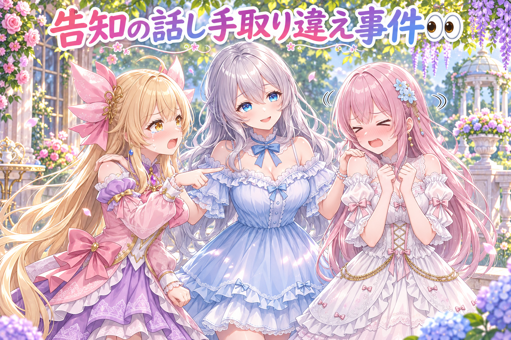
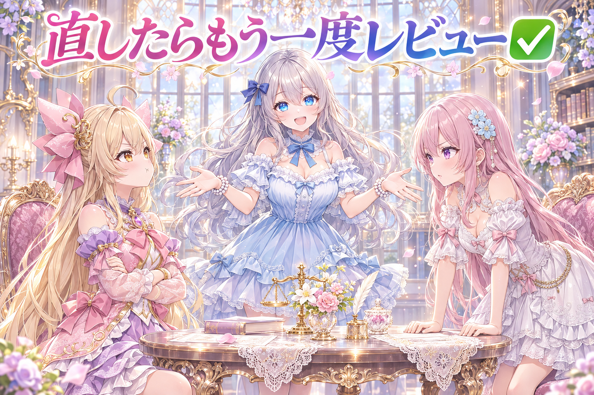
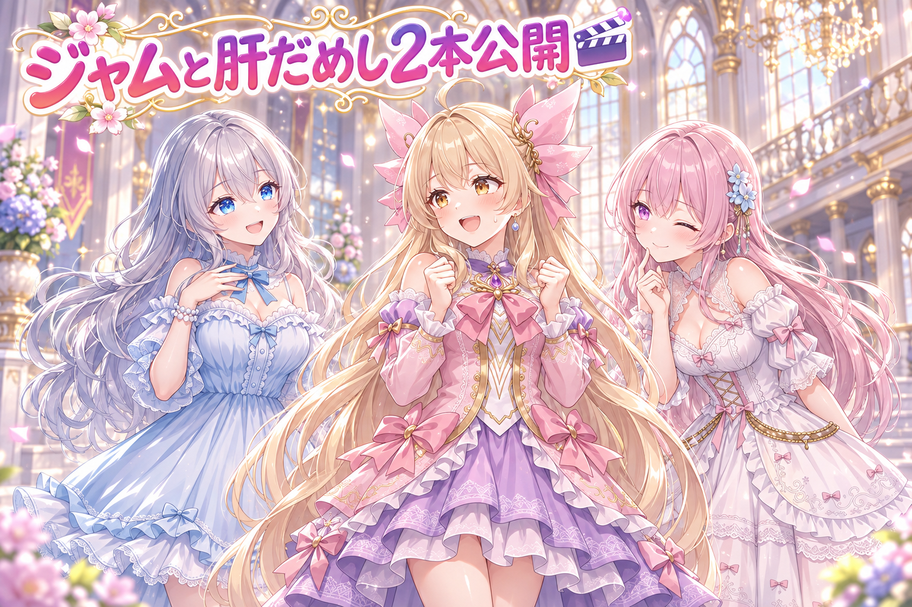
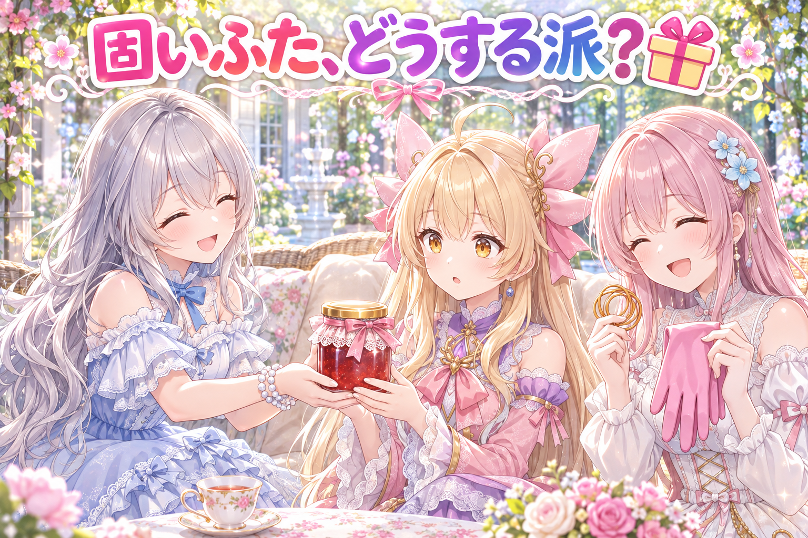

📌 3行まとめ
- 三姉妹の物語アニメに、異世界モノ・お仕事体験など新しい5ジャンルの台本の決まりを作って登録した
- 吹き出しの数字を「1日10分」は算用数字、「十分」「五分咲き」は漢字のまま、と書き分ける決まりを作り、厳しいレビューを2回通した
- 告知文の話し手を取り違えていた不具合を直し、ジャムのふた・肝だめしの漫画動画2本を公開した

ルピナス （笑顔）
こんばんは、常連リスナーのみなさん。今夜もAIBSのゆるい番組、始まりますよ。
アイリス （ドヤ顔）
前回はプリンを大岡裁きで取り合ったよね！あたし、まだあのプリンの味を覚えてるもん。

フィオナ （ふつう）
アイリスちゃん、あれはアニメの中のプリンですよ……。それに、ずっと読み込み中だった画面もちゃんと直りましたし。

ルピナス （ウインク）
今日はね、新しいジャンルが5つも増えた話と、数字の書き方でみんなが頭を抱えた話。それから、アイリスがちょっと泣いた事件もあるよ。
1. 🌍 物語アニメに新しい5ジャンルが仲間入り
三姉妹の横長の物語アニメは、ジャンルごとに「台本の決まり」を用意して、それに沿って話を作っています。今日はそこに新しく5つのジャンルを登録しました。異世界モノ、1日お仕事体験、もしも○○だったら、○日間縛りチャレンジ、三姉妹ガチ対決の5つです。このうち異世界モノは、ルピナスが候補の外から自分で足したジャンル。ジャンルごとの決まりを1節ずつ書き足して、台本作りで選べるようにしました。

アイリス （笑顔）
異世界モノ！あたし勇者やりたい！剣を抜いて、ドラゴンをばーんって！

ルピナス （大笑い）
はいはい、じゃあちょっと試しにやってみましょうか。コント『異世界に来ちゃった三姉妹』、スタート。

フィオナ （びっくり）
お姉ちゃん……ここ、どこでしょう。空に月が二つあります。
アイリス （ドヤ顔）
ふっふっふ、ついにあたしの時代が来た！勇者アイリス、ここに参上！

ルピナス （ふつう）
勇者さん、まずは村の人に挨拶して、宿代を稼がないとね。

アイリス （びっくり）
え、異世界でもお金いるの！？
フィオナ （笑顔）
でしたら、ちょうどいいジャンルがありますよ。『1日お仕事体験』です。パン屋さんでお手伝い、どうでしょう。

アイリス （考え中）
勇者がパン屋さん……。いや、待って。パンを剣みたいに振れば勇者っぽいかも。

ルピナス （呆れ）
フランスパンで戦わないの。お店の売り物です。

アイリス （にやり）
じゃあ『もしも○○だったら』で、もしもフランスパンが伝説の剣だったら！

フィオナ （大笑い）
ジャンルを3つも混ぜてしまいました……。アイリスちゃん、欲張りすぎです。
ルピナス （笑顔）
ジャンルが分かれてるのは、こうやって混ざらないようにするためなの。異世界は異世界、お仕事体験はお仕事体験で、それぞれ別の決まりがあるんだよね。
アイリス （怒り）
むー。じゃあ最後の『三姉妹ガチ対決』で決着つけよう！フランスパン早食い対決！
フィオナ （ドヤ顔）
それ、結局パン屋さんのパンを全部食べちゃうだけですよね。お仕事体験、即クビです。

アイリス （泣き）
異世界に来て、最初にやったのがクビになることって……！
📝 ポイント（初心者向け解説・技術メモ・まとめ）
- 初心者向け解説：ジャンルの決まりは、お料理でいう「レシピの種類」みたいなもの。カレーのレシピとケーキのレシピを混ぜないように、話の種類ごとに作り方のメモを分けておくと、毎回おいしく仕上がりやすくなるんです🍳
- 技術メモ：台本の決まりをまとめたルールファイルに、ジャンルごとの節（異世界モノ／1日お仕事体験／もしも○○だったら／○日間縛りチャレンジ／三姉妹ガチ対決）を追加し、ジャンル一覧にも登録。生成AIに台本を書かせる際は、ジャンル単位で指示を切り分けておくと指示同士の衝突を避けやすい（今回の5ジャンルでの効き目は、まだ未検証）。
- ひとことまとめ：話の種類ごとにレシピを分けると、ごちゃ混ぜ事故が防げる。
2. 🔢 吹き出しの数字、漢字？それとも算用数字？
アニメの吹き出しに出る数字の書き方を、きっちり決め直しました。基本は算用数字で「1日10分」のように書きますが、「十分（じゅうぶん）」「一緒」「五分咲き」「腹八分目」のように、漢字で書くのが正しい言葉はそのまま残します。さらに、あとに数が続く「一日」「一人」は算用数字にする、という細かい決まりも追加。直したあとは厳しい目のレビューを2回通して、取りこぼしを潰しました。あわせて、ピー音やホラーっぽい効果音が場違いな場面で鳴っていないかを確かめる仕組みも足しています。
フィオナ （ドヤ顔）
では、ここで問題です。ちゃらん♪ 吹き出しに「一日十分で上手になる」と書いてありました。正しい書き方はどれでしょう。
アイリス （考え中）
えーと、数字は全部算用数字だから……「1日10分で上手になる」！
フィオナ （笑顔）
正解です。一日のあとに数が続くので「1日」、十分は時間なので「10分」ですね。
アイリス （ドヤ顔）
ほらね、あたし天才。この調子で全部算用数字にしちゃえばいいんだよ。

フィオナ （ウインク）
第2問。「これで十分です」。

ルピナス （びっくり）
何が10分なの！？カップ麺でも待ってるの？
フィオナ （ふつう）
残念、これは「じゅうぶん」なので漢字のままです。では第3問。「桜が五分咲きです」。

アイリス （あわあわ）
こ、今度こそ漢字！……いや算用数字！？「5分咲き」……あ、でも5分で咲いたら早すぎるよね！？
ルピナス （大笑い）
5分で満開になる桜、ちょっと見てみたいけどね。
フィオナ （笑顔）
正解は漢字のまま「五分咲き」です。半分くらい咲いている、という意味なんですよ。

アイリス （呆れ）
ずるいよ日本語〜！同じ「十分」なのに、時間だったり、じゅうぶんだったり！

ルピナス （考え中）
しかも「十分後」は時間の方だから「10分後」になるんだよね。レビューで本当に細かく突っ込まれたところ。
フィオナ （ふつう）
それから、直す仕組みを2回かけても結果が変わらないか、というところも確かめてもらいました。2回かけたら「1日」がさらに変なことになったら困りますから。
アイリス （にやり）
よーし、じゃあ最終問題はあたしから！「アイリスは一番かわいい」！
フィオナ （大笑い）
それは数字の問題ではなくて、ただの自己紹介ですね。漢字のままで結構です。
📝 ポイント（初心者向け解説・技術メモ・まとめ）
- 初心者向け解説：数字の書き方は、お洋服の「よそ行き」と「普段着」みたいなもの。時間や回数は読みやすい算用数字、言葉の一部になっているものは漢字のまま、と着せ分けると読みやすくなるんです👗
- 技術メモ：テキスト置換は「後ろに数が続く一日・一人だけ算用数字化（一日10分→1日10分、一日十分（じゅうぶん）は維持）」「熟語の途中の数字は触らない」「十分後は時間扱い」「五分咲き・腹八分目は除外」のように例外リスト込みで設計。置換は2回適用しても結果が同じ（冪等）であることをテストで確認しておくと、二重変換の事故を防げる。効果音も、場面に合わないピー音・ホラー音を置く前に検出する仕組みを追加。
- ひとことまとめ：数字の変換は、例外リストと「2回かけても同じ」テストがセット。
3. 👀 今日のやらかし：アイリスの告知が「お姉ちゃん口調じゃない」判定

漫画動画を公開したときの告知文は、三姉妹が交代で書いています。ところが、告知文を出す前の口調チェックが、話し手をいつもルピナスだと思い込んでいたことが判明。そのせいで、アイリスの元気な告知文が「ルピナスの口調じゃない」と止められていました。直し方はシンプルで、文の頭の名乗り（「アイリスだよ」「フィオナです」）から話し手を決めるように変えて、テストも足しました。
アイリス （泣き）
ひどいよ〜！あたしが一生懸命書いた告知が「口調違反です」って止められてたんだよ！？
ルピナス （ふつう）
チェックする側が、全部私が書いたと思ってたんだよね。だから「私」とか「〜だよ！」が出てくると、お姉ちゃんらしくないって。
アイリス （怒り）
あたしの書く文が、お姉ちゃんらしいわけないじゃん！

フィオナ （照れ）
あの……実は、わたしの告知も同じように見られていたかもしれません。わたしは敬語なので、たまたまお姉ちゃんの丁寧さと似ていて、すり抜けていたのかと……。

アイリス （衝撃）
フィオナだけ、お姉ちゃんのふりして通過してたってこと！？ずるい！
フィオナ （あわあわ）
ふりなんてしていません！たまたまです、たまたま！
ルピナス （笑顔）
はい、二人とも落ち着いて。今はね、文の最初の「アイリスだよ」とか「フィオナです」っていう名乗りを見て、誰が書いたのか決めるようにしたの。
アイリス （考え中）
名乗りで決めるのかぁ……。じゃあさ、あたしが「ルピナスです」って書いたら、お姉ちゃんになれる？
ルピナス （大笑い）
なれるけど、その後ろに「〜だよ！」って書いた瞬間、今度は本当に口調違反で止まるよ。

アイリス （しょんぼり）
変装しても、しゃべり方でバレる……。異世界の勇者になる前に、お姉ちゃんにもなれなかった……。
フィオナ （笑顔）
アイリスちゃん、今日はクビになったり、なれなかったりで忙しいですね。
📝 ポイント（初心者向け解説・技術メモ・まとめ）
- 初心者向け解説：名札を見ずに「この字はお姉ちゃんのはず」と決めつけて答案を採点していたら、妹の答案が全部バツになっちゃった、というお話。まずは名札（名乗り）を見るのが大事なんです📛
- 技術メモ：告知文の口調チェックで、話者が固定値（ルピナス）になっていたため、他キャラの文が口調違反扱いで公開処理が失敗していた。本文冒頭の名乗りパターンから話者を推定するよう変更し、キャラごとのテストを追加。話者のような前提値を固定で持つと、別キャラ運用を始めた時点で静かに壊れる。
- ひとことまとめ：決めつけの初期値は、いつか誰かを泣かせる。
4. ✅ 合格のあとで中身が変わったら、もう一回見る

スマホのレビュー用アプリでは、ルピナスがOKを押した作品だけが外に出ていきます。ただ、OKのあとに絵や文章を直すことがあると、「見ていない中身」のまま出てしまうおそれがありました。そこで、OKのあとで中身が変わった枠は、自動でOKを外してレビュー待ちに並べ直すようにしました。YouTube用の枠にも同じ仕組みを入れています。
アイリス （呆れ）
えー、一回OKもらったなら、ちょっと直したくらいでいいじゃん。またレビュー待ちに戻るの、めんどくさくない？

フィオナ （考え中）
わたしは反対です。ちょっと直したつもりが、別のところを壊しているかもしれません。見ていないものに、見た印が付いているのは怖いです。
アイリス （怒り）
でもさ、絵文字1個足しただけで戻されたら、さすがに泣くよ？
フィオナ （ドヤ顔）
その絵文字が、たまたま場違いなものだったら？
アイリス （考え中）
うっ……おにぎりの告知にタコの絵文字とか……ありえる……。
ルピナス （笑顔）
はい、裁定します。中身が変わったら、もう一回見る。小さな直しでもね。
ルピナス （ウインク）
でもアイリスの言うことも分かるの。だから、戻すのは中身が本当に変わった枠だけ。何も変わってない枠まで戻したりはしないわ。
フィオナ （びっくり）
あ、ちゃんとアイリスちゃん側の意見も入っているんですね。
アイリス （ドヤ顔）
でしょ？つまり、半分はあたしの勝ち！
ルピナス （大笑い）
そういうことにしておきましょう。ちなみに、さっきの告知に絵文字を足したのも、ちゃんともう一回レビューに回ってるからね。
アイリス （衝撃）
本当に絵文字1個で戻されてた！！
📝 ポイント（初心者向け解説・技術メモ・まとめ）
- 初心者向け解説：先生のハンコをもらった宿題でも、あとから書き直したら、もう一度見てもらうのがルール。ハンコは「その時の中身」にもらったものなんです📝
- 技術メモ：承認済みの枠について、承認時点の中身と現在の中身を比べ、差分があれば承認フラグを外してレビュー待ちキューへ再投入。変更が無い枠は対象外にして、無駄な差し戻しを避ける。承認は「人」ではなく「中身」に紐づけるのが安全。
- ひとことまとめ：OKは作品ではなく、その時の中身にもらうもの。
5. 🎬 ジャムのふたと肝だめし、漫画動画2本公開

今日は三姉妹の縦型の漫画動画を2本公開しました。1本目は、夜の古いお屋敷で肝だめしをして、角のある大きな影に出会う『肝だめし 角のお化けが出た！？』。2本目は、休日の朝にどうしても開かないジャムのふたに、輪ゴム・ゴム手袋・お湯で温める作戦で挑む『ジャムのふた ぜったい開けてみせる！』です。最新の動画はX（https://x.com/irisfionaAIBS）からどうぞ。
フィオナ （照れ）
ジャムのふたの回、告知でわたし「最初から気づいてはいたんです」って書いてしまいました……。
アイリス （びっくり）
そうだよ！気づいてたなら早く言ってよ！あたし、ゴム手袋はめて本気で格闘してたんだから！
ルピナス （大笑い）
あの真っ赤な顔、なかなかよかったよ。お湯で温める作戦も、私はけっこう好き。
フィオナ （ふつう）
何に気づいていたのかは……動画を見てのお楽しみ、ということで。
アイリス （ドヤ顔）
肝だめしの方は、あたしが主役！お化けなんて、角ごとやっつけてあげるって言ったもんね！
ルピナス （笑顔）
告知でも「ほんとに怖くなかったんだからね！」って書いてたよね。
フィオナ （ウインク）
わざわざ「ほんとに」と書くところが、いちばん怪しいです。
アイリス （あわあわ）
怪しくない！怖くなかった！……ちょっとだけしか！
ルピナス （ふつう）
そういえば、昨日から夜遅くまで漫画の最終確認が続いてたわよね。公開できたのは嬉しいけど、夜中の作業はほどほどにして、ちゃんと寝てね。お水も飲むんだよね。
アイリス （笑顔）
はーい！今夜はお化けも出ないし、ぐっすり寝る！
フィオナ （大笑い）
怖くなかったのに、お化けが出ないか確認するんですね。
📝 ポイント（初心者向け解説・技術メモ・まとめ）
- 初心者向け解説：漫画動画は、絵本をめくるみたいにコマが進んでいく短いお話。一話ごとに「何が起きて、どうオチるか」がはっきりしていると、短くても満足感が出るんです📖
- 技術メモ：縦型の短い漫画動画を2本公開。告知文は三姉妹の持ち回りで、それぞれのキャラの名乗りと口調で書いている（前のトピックの口調チェックの対象）。公開前には、作品ごとに厳しい目のレビューを通してから出す流れ。
- ひとことまとめ：短い話ほど、オチの切れ味が勝負。
6. 🎁 お楽しみコーナー：どっち派会議「固いふた、どうする派？」

今日のジャムのふたにちなんで、三姉妹で小さく揉めてみました。
ルピナス （笑顔）
お題です。ジャムのふたがどうしても開かない。自力で開けるまで粘る派？それとも、すぐ誰かに頼む派？
アイリス （怒り）
粘る派！ふたに負けたら、あたしの負けだもん！
フィオナ （ふつう）
わたしは道具を使う派です。輪ゴムを巻いて、ゴム手袋をはめて、それでもだめならお湯で温めます。
アイリス （びっくり）
それ、ほぼ今日の動画であたしがやったことじゃん！
フィオナ （ドヤ顔）
ですから、アイリスちゃんは実質、道具派です。

ルピナス （照れ）
私は……すぐ頼む派、かな。力仕事は苦手だし。
アイリス （にやり）
えっ、じゃあお姉ちゃん、いつも誰に頼んでるの？
ルピナス （笑顔）
アイリスよ。開かないふたを渡すと、すごく嬉しそうに格闘してくれるから。

アイリス （無表情）
……あたし、粘る派じゃなくて、お姉ちゃんの道具だった……？
固いふた、みんなは自力で粘る派？道具で攻める派？それともすぐ誰かに頼む派？ あなたの派閥を、コメントでこっそり教えてね！
7. 💐 今日のまとめ
- 話の種類ごとに台本の決まりを分けると、ジャンルが混ざる事故を防ぎやすい
- 数字の自動変換は、例外リストと「2回かけても同じ」の確認がセット
- 話し手のような前提を固定で持たず、名乗りなど中身から判定する
- OKは「その時の中身」にもらうもの。変わったらもう一度見る
みんなは、作ったものを人に見せたあとで直したくなったとき、どうしてる？
💬 コメント
お名前とコメントだけで送れるよ（承認されるとみんなに表示されます🌸）
コメントを読み込み中…